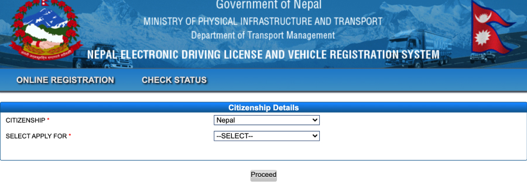
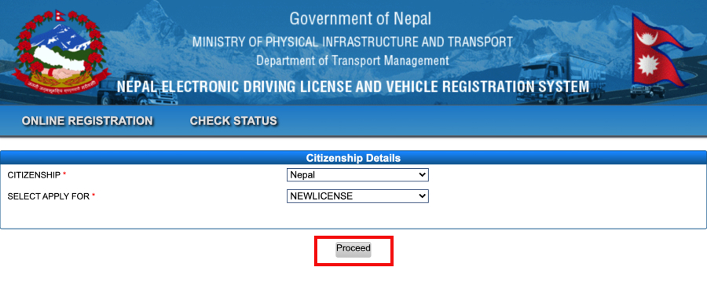

२. वेब साइटको गृहपृष्ठमा महत्वपूर्ण लिंकहरुको चिनारी मुनि रहेको "अनलाईन सवारी चालक अनुमतिपत्र प्रणाली" लिंकमा क्लिक (Click) गर्नुहोस।
३. DRIVING LICENSE ONLINE REGISTRATION मा क्लिक (Click) गर्नुहोस।
४. CITIZENSHIP मा Nepal छान्नुहोस।

५. SELECT APPLY FOR मा आफुले चाहेको बुंदा छानेर Proceed मा क्लिक (Click) गर्नुहोस।

६. आफ्नो व्यक्लतगत वववरण (DEMOGRAPHIC DETAILS) भर्नुहोस्।
७. DATE OF BIRTH (DOB) छानेपछि आफै उमेर (AGE) आउनेछ।
८. स्थायी ठेगाना (PERMANENT ADDRESS) भर्नुहोस्।
९. यदि स्थायी र अस्थायी ठेगाना एकैभए SAME AS PERMANENT मा Check गर्नुहोस।
१०. आफुले दरखास्त दिन लागेको वर्ग छान्नुहोस।
११. PROFESSIONAL OR NON PROFESSIONAL मा others छान्नुहोस।
१२. आफले दरखास्त दिन लागेको कार्यालय रहेको अञ्चल छान्नुहोस।
१३. सो अञ्चलको लाइसेन्स कार्यालय छान्नुहोस।
१४. याद राख्नहुोस Asterisk (*) लागेका विवरण अनिबार्य भर्नुहोस्।
१५. सबै विवरण भरेपछि SUBMIT मा Click गर्नुहोस।
१६. Are you sure you want to continue? Message आउदा OK मा Click गर्नुहोस।
१७. आफूले भरेको विवरण पुन एकपटक Check गरी फरक परे EDIT DETAILS मा Click गरी सच्याउनहुोस।
१८. विवरण ठीक भए Save Details मा Click गनहुोस।
१९. APPLICANT SAVED SUCESSFULLY देखिन्छ।
२०. OK मा Click गनुहोस।
२१. आफूले भरेको विवरणको Summary पुन देखिन्छ।
२२. PRINT मा Click गनुहोस।
२३. तपाईको विवरण र तपाईलाई प्रदान गरियको Reference Number सहितको १ पानाको विवरण Pdf file को रुपमा save हुन्छ।
२४. सो विवरण प्रिन्ट गरि तोकिएको मितिमा सम्बन्धित कार्यालय जानहुोस।
२५. आफूले भरेको विवरण गलत वा कुनै विवरण छुटेको भए कार्यालयमा Biometric Detail दिदा कार्यालयको अपरेटरलाई भन्नहुोस।
२६. ध्यान दिनहुोस निवेदकले भरेको विवरण फरक परेमा निवेदक स्वयम जिम्मेवार हुनेछ।